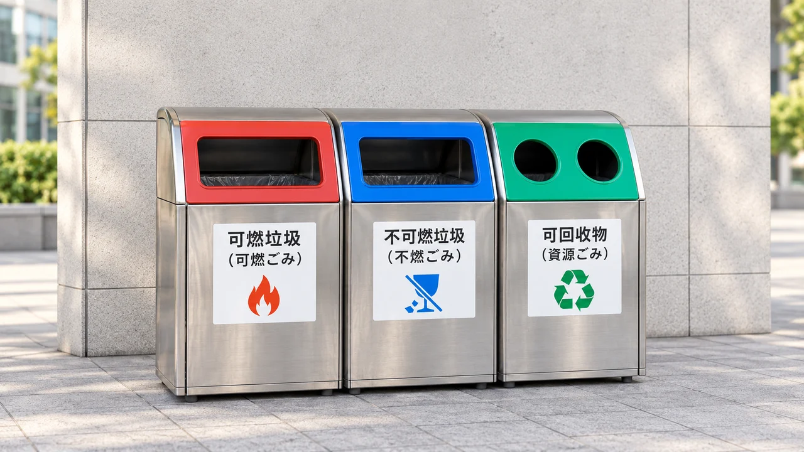
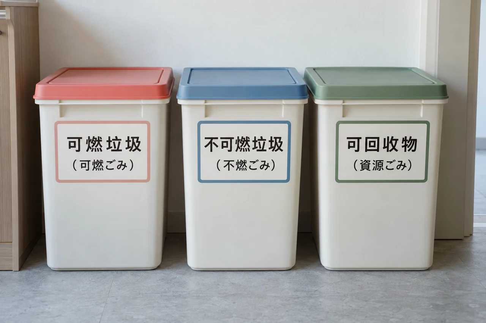

東京に引っ越されたお客様が最初に戸惑われるのは、家賃よりもごみ出しだったりいたします。同僚の方から「今日は不燃ごみの日」と言われ、袋を持ってごみ置き場の前に立つと、隣の建物には別のルールが貼ってある。そんなお話を、お客様のご案内中に何度もお聞きしてまいりました。
本稿では分別表を暗記していただくのではなく（区ごとに表が異なりますので、覚えても役に立ちません）、東京のごみ分別がなぜ複雑なのか、入居前に確認すべき点、そして購入時になぜ私がごみ置き場を拝見するのかをお伝えいたします。
1. 同じ東京なのに、なぜ区ごとにルールが違うのか
東京23区の家庭ごみは、分別や収集の方法を各区がそれぞれ定めています。そのため、同じ「プラスチック」でも、ある区では可燃ごみ、別の区では別途回収ということがございます。収集日も地域によって異なります。実例として、大田区ではプラスチックの分別回収を2022年11月に一部地域で開始し、2025年4月1日から区内全域で実施しています（大田区区報）。同じ区の中でも、年によってルールが変わるということです。
そのためお客様にまずお伝えしているのは、以前お住まいの地域やご友人の区の経験で推測せず、お住まいになる区のご案内に従うということです。
2. 基本の分け方は、実はよく似ています
細部は区によって異なりますが、大枠は似ており、可燃ごみ（生ごみ、リサイクルできない紙類など）、不燃ごみ（金属、陶磁器、ガラス類など）、資源（ペットボトル、缶、びん、紙類など）、そして別扱いの粗大ごみとなります。世田谷区を例にしますと、家庭ごみは可燃・不燃・資源に分けて収集され、可燃ごみはおおむね週2回、不燃ごみは月2回程度、実際の収集日はお住まいの地区により異なります（世田谷区の公開資料と民間の整理を参考にしています。区の案内をご確認ください）。
ごみ袋もそれほど心配はいりません。東京23区では専用の指定袋を求めない区が多く、世田谷区では中身の見える透明または半透明の袋、もしくは90リットル以下のふた付き容器を使う方法です。ただし区によって細部が異なりますので、お引越し前にお住まいの区の案内をご覧ください。

可燃・不燃・資源という大枠はどの区も似ており、細部が区ごとに異なります
3. 間違えやすい品目
分別表は区ごとに異なりますが、「間違えやすいもの」はおおむね共通でございます。最初のごみ出しの前に、一度ご覧ください。
| 品目 | 多くの区での扱い | ご注意いただく点 |
|---|---|---|
| 生ごみ・ティッシュ | 可燃 | 生ごみは水気を切り、夏場は当日に |
| ペットボトル・缶・びん | 資源 | キャップとラベルを外し、中を洗います |
| プラスチック製容器包装 | 区による | 別回収の区と可燃扱いの区があり、最も差が出る項目です |
| 傘・はさみ・アルミホイル | 不燃 | 中央区では金属類として不燃に分類されます |
| スプレー缶・カセットボンベ | 別扱い | 使い切ってから、穴は開けずに中身の見える袋で |
| 乾電池・蛍光管 | 拠点回収 | 通常のごみとは別に、区施設や店頭の回収拠点へ |
| 包丁・割れたガラス・針 | 不燃 | 新聞紙に包み、「危険」と表示します |
| 一辺30センチを超えるもの | 粗大ごみ | 事前申込と処理券が必要です |
| エアコン・テレビ・冷蔵庫・洗濯機 | いずれでもない | 家電リサイクル法の対象です（次項） |
＊目安でございます。実際の分別はお住まいの区の案内に従ってください。
4. この四品目は粗大ごみとして出せません
お引越しやお引渡し後に最も多いのがこちらです。エアコン、テレビ、冷蔵庫・冷凍庫、洗濯機・衣類乾燥機の四品目は、家電リサイクル法の対象で粗大ごみには出せません。テレビはブラウン管・液晶・有機EL・プラズマのいずれも対象でございます。
リサイクル料金と収集運搬料金をお支払いのうえ、購入店や買い替え先の販売店、または区が案内する業者を通じて処分いたします。リサイクル料金はメーカーとサイズにより異なり、民間の整理によればテレビ15型以下でおよそ1,870〜3,100円、冷蔵庫170リットル以下でおよそ3,740〜5,599円、洗濯機でおよそ2,530〜3,300円、収集運搬料金は別途およそ1,500〜3,000円が目安とされています。指定引取場所へご自身で持ち込まれる場合、運搬料はかかりません。
パソコンも一般ごみには出せず、資源有効利用促進法に基づきメーカーが回収いたします。区によっては小型家電の回収ボックスもございます。
なぜこの点を申し上げるかと申しますと、中古物件では前の所有者様の家電が残っている場合があるためです。「家電付きでお得」と思われたものが、処分費用のかかる品であることもございます。内見の段階で確認し、必要に応じて交渉条件に含めてまいります。
5. 粗大ごみの基準と費用
目安は「一辺が30センチを超えるもの」でございます。足立区は「一辺の長さが30cmを超えるもの」、葛飾区は「高さ・幅・奥行のいずれか一辺が30センチメートルを超えるもの」、新宿区は「一辺の長さの最大がおおむね30センチメートル以上」と、書き方に差はございますが、30センチを目安にされると大きく外れません。
費用は品目とサイズにより、民間の整理では世田谷区でおよそ400〜3,200円、葛飾区でおよそ300〜3,200円とされています。手順は、お住まいの区の粗大ごみ受付センターへ電話またはインターネットでお申し込み、金額をご確認のうえ、コンビニ等で処理券をご購入、品物に貼付して指定日に指定場所へお出しいただく流れです。
⚠️ 受付窓口と電話番号は区ごとに異なりますので、他区の番号へおかけにならないようご注意ください。23区公式の電話受付・インターネット受付は23区 粗大ごみ受付窓口まとめに一覧にしております（毎週自動で再確認）。また3月から4月の繁忙期はお申し込みが混み合いますので、2〜3週間前からのお手配をおすすめいたします。
6. 粗大ごみのお申し込み
お引越しで最もつまずきやすいのが粗大ごみです。ソファ、マットレス、テーブルなどは通常のごみ置き場には出せず、お住まいの区へ電話またはインターネットで申し込み、コンビニや指定の店舗で「粗大ごみ処理券」を購入して品物に貼り、指定された日に指定の場所へ出します。受付窓口や電話番号は区ごとに異なり、手数料は品目とサイズによって変わります。新居に入る前に予約しておくことをおすすめします。
7. 日本語が不安なときは

日本語の表示と中国語を並べておくと、最初のごみ出しで迷われません
外国語版の資料を用意している区も多くございます。たとえば目黒区の公式サイトには中国語版の「資源とごみの分け方・出し方」PDFがあり、港区にも中国語を含む分別チラシやガイドブック、分別アプリがございます。中国語が繁体字か簡体字かは各区のページでご確認ください。外国語資料のない区もありますので、その際は管理会社や私にお問い合わせください。
8. ご購入の際に、なぜごみ置き場を拝見するのか
マンションの内見では、私はまずごみ置き場を拝見するのが習慣です。清潔か、においはないか、分別の表示は分かりやすいか。これは、その建物の管理状態をよく表しております。また、「24時間ごみ出し可」と表示されているマンションは、特に夏場など、決まった時間に合わせず出せるので便利です。
ただし「24時間」はあくまで表示ですので、実際の運用は管理規約・使用細則で確認が必要です。置き場の施錠、収集時間、分別方法、粗大ごみの扱いなどは、購入前にお尋ねになるべき事項です。これらは管理規約と重要事項説明書に記載がありますので、私が中国語にして、日常生活に関わる点をお伝えいたします。管理費・修繕積立金については〈マンションの管理費・修繕積立金の見方〉もご参照ください。
9. 東京23区のごみ分別案内（中国語版の有無）
原則は以上のとおりですが、実際にはお住まいの区の案内に従ってください。23区の公式ページと中国語版の有無を一覧にいたしました。
| 区 | 中国語版 |
|---|---|
| 千代田区 | ⬇︎ PDF 他の版 |
| 中央区 | |
| 港区 | ⬇︎ PDF（9.1 MB） 他の版 |
| 新宿区 | ⬇︎ PDF（1.3 MB） 他の版 |
| 文京区 | |
| 台東区 | ⬇︎ PDF（835 KB） 他の版 |
| 墨田区 | ⬇︎ PDF（5.3 MB） |
| 江東区 | ⬇︎ PDF 多言語合本 |
| 品川区 | ⬇︎ PDF（5.0 MB） |
| 目黒区 | ⬇︎ PDF 他の版 |
| 大田区 | ⬇︎ PDF（8.6 MB） 他の版 |
| 世田谷区 | |
| 渋谷区 | |
| 中野区 | ⬇︎ PDF（2.3 MB） 他の版 |
| 杉並区 | |
| 豊島区 | ⬇︎ PDF（2.4 MB） 多言語合本 |
| 北区 | ⬇︎ PDF（1.2 MB） |
| 荒川区 | ⬇︎ PDF（9.7 MB） 繁体字 他の版 |
| 板橋区 | ⬇︎ PDF（1.7 MB） 多言語合本 他の版 |
| 練馬区 | ⬇︎ PDF（3.0 MB） |
| 足立区 | ⬇︎ PDF（1.6 MB） 多言語合本 |
| 葛飾区 | ⬇︎ PDF（565 KB） 他の版 |
| 江戸川区 | ⬇︎ PDF（6.6 MB） 他の版 |
＊リンクは各区公式サイトのPDFに直接つながります。最終確認日 2026-10-29。毎週自動で再確認しております。
この表は単独のページにもまとめております。表だけの構成ですので、入居者様やお客様へそのままお送りいただけます。
なお、冊子の改訂時期は区により異なります。収集日は地域別に編成されるため日本語版のみの区が多く、分別アプリ（港区・足立区など）のご利用が確実です。プラスチックの分別はこの2年で変更が相次いでおり（大田区は2025年4月から全域、練馬区は2026年10月に調整）、古い資料のご参照にはご注意ください。
東京各区の暮らしの違いは〈東京23区の住宅購入入門：各区の特徴とエリアの選び方〉をご覧ください。物件をご覧になる際は、LINEでご予算とご希望のエリアをお知らせください。ごみ置き場や管理状況もあわせて拝見いたします。住宅ローンのご利用可否・可能な借入割合は個別の事情と銀行の審査によります。登記と契約は司法書士・宅建士が確認いたします。
出典
・家電：家電リサイクル法、資源有効利用促進法。リサイクル料金・粗大ごみ手数料は民間の整理による概算（2026年）。
＊ごみの分別ルール・費用・収集日はたびたび見直されますので、お住まいの区の最新のご案内をご確認ください。